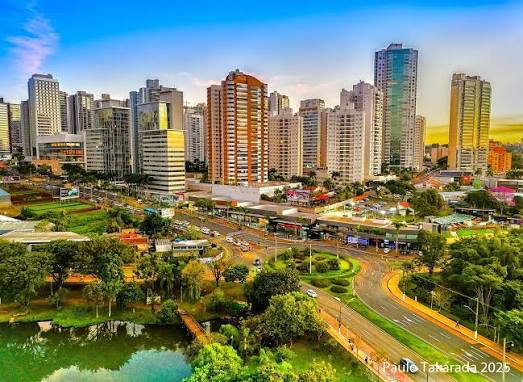

fundação da Cidade
A história de Londrina é a trajetória de uma cidade que nasceu de um planejamento visionário e se tornou uma potência regional. Habitada originalmente por povos indígenas, a região teve seu rumo alterado no fim da década de 1920, quando investidores britânicos atraídos pela fertilidade da terra roxa fundaram a Companhia de Terras Norte do Paraná. Oficialmente fundada em 21 de agosto de 1929 e batizada como "Pequena Londres" em homenagem à capital britânica, Londrina foi emancipada em 1934 e cresceu a passos largos com a chegada de milhares de imigrantes e migrantes.
